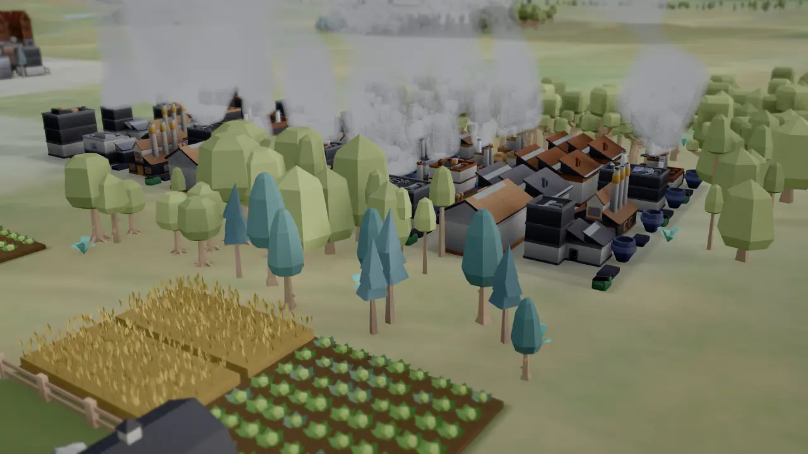

BOOMTOWN 街づくりシミュレーション
生きた街を作りましょう
あなたの街、あなたのルール。地区を区画し、猛暑や寒波の中でも明かりを保ち、住民に食料を届け、交通が動き出す様子を眺めましょう。

生きた街を作りましょう
あなたの街、あなたのルール。地区を区画し、猛暑や寒波の中でも明かりを保ち、住民に食料を届け、交通が動き出す様子を眺めましょう。
Boomtownはくつろげて奥深いシティビルダーです。住宅、店舗、工場を配置し、電気と水道をつなぎ、市民が引っ越し、家族を育て、通勤し、何を考えているかを教えてくれる様子を見守りましょう。
区画し、電力を通し、成長を見届けよう
公園、カフェ、そして数えきれない小さなディテール
路線を引いて、乗客で埋まるのを見届けよう
雪、猛暑、嵐が街の運営を変える

住民は生まれ、年を重ね、次の世代へ受け継がれる
食料を育て、余剰を売り、鉱石を掘ろう
データマップで交通、汚染、地価が一目でわかる
名所、旧市街、歩行者天国が観光客を呼び込む
車はそれぞれ独自のルートを選びます。車を持たない世帯は徒歩や公共交通を使います。バス、路面電車、鉄道を運行し、歩行者天国を作り、空港を開きましょう。
ゾーンごとに税率を設定し、各部署に予算を配分し、融資を受け、14の政策から選べます。
路面電車から原子力発電まで17の技術と、万国博覧会や宇宙センターといった偉業。
火災は家から家へ燃え広がり、嵐は建物を傷め、不満を抱いた住民は通りに繰り出します。
交通、汚染、地下水、風、犯罪、年齢、観光客などを表示でき、色覚多様性に配慮したモードもあります。
集落から巨大都市まで8つのランク、期限付きのミッション、25の実績、そして予期せぬニュースイベント。
置く、プレビュー、確定。ボタンを長押しすると機能を確認でき、直前の操作を取り消せます。左利きモードや、より大きなUI（UIサイズ）にも切り替えられます。
iPhoneとAndroidでは横向きでプレイします。iPadは縦向きにも対応しています。


iOS 15以降
Android 7.0（API 24）以降、スマートフォンとタブレット
iPhoneとAndroidは横向き。iPadは縦向きにも対応します。
不要。完全オフラインで遊べます。
開始資金は$120,000です。維持費は×0.8、火災の発生確率は半分、破産はありません。
開始資金は$60,000です。12か月赤字が続くと、街は破産します。
開始資金は$30,000です。維持費は×1.25、火災は1.5倍の確率、破産ルールは同じです。
資金は無制限、すべての解放が無料です。実績は対象外です。
新しい街ごとに、規模、地形、世代交代のペース、カレンダーを選べます。
集落、村、町、小都市、都市、大都市、メガロポリス、巨大都市。
すべての街で引き継がれます。サンドボックスの街は対象外です。
現金報酬のある目標が12種類あります。期限があるので、達成できそうなものを選びましょう。
さらに5つの大型プロジェクト（万国博覧会から宇宙センターまで）。
実在の街をモデルにした3つの挑戦。銅・銀・金メダルを目指そう。
Google PlayとApp Storeで配信中。
4.99 · 買い切り · 広告なし・アプリ内課金なし